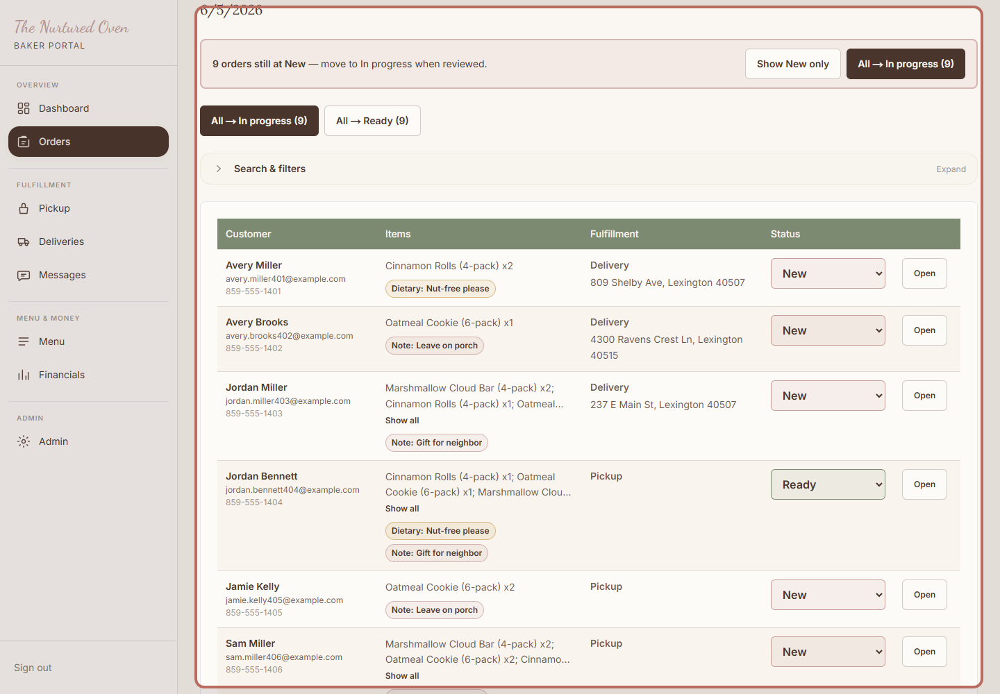
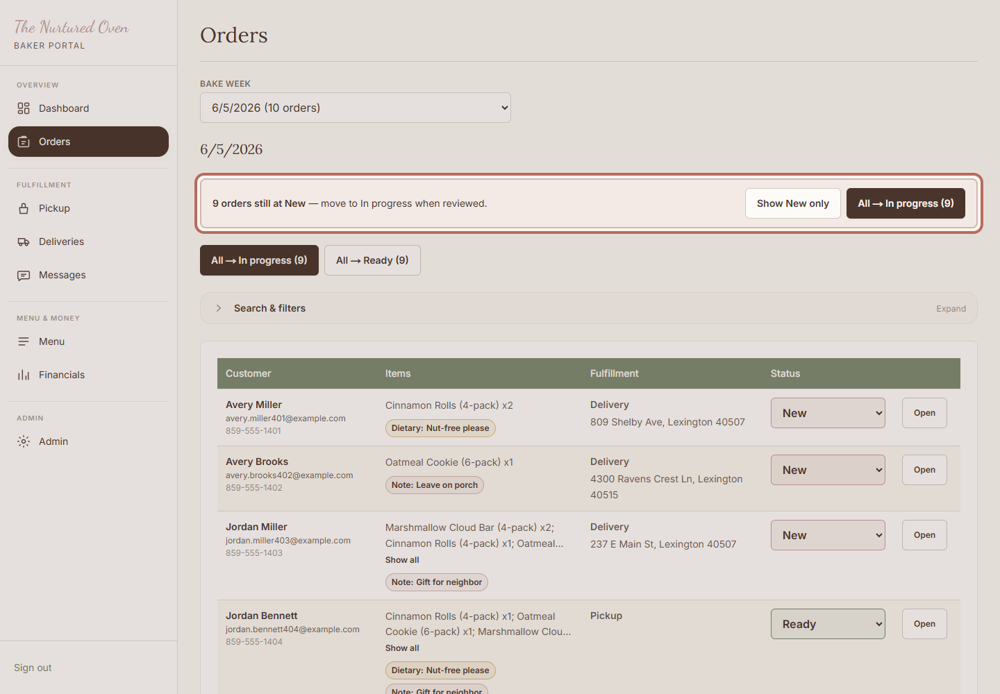
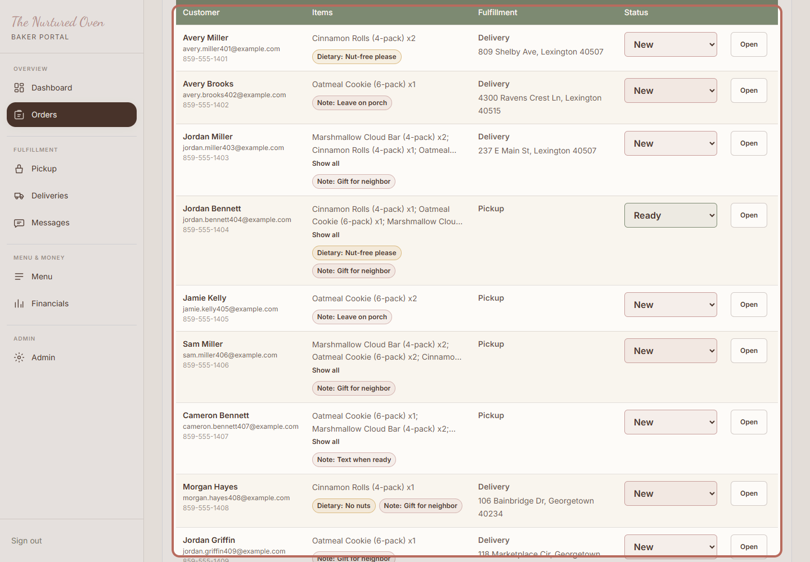
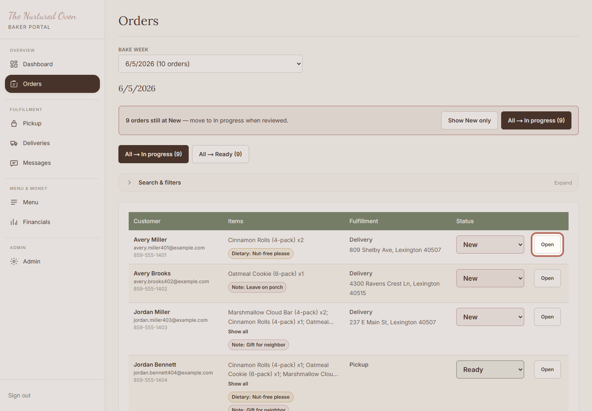

How to review paid orders
Use this to see what customers have already paid for before baking, packing, pickup, or delivery.
Before You Start
- You can log in to the admin area.
- Orders have come in through the website.
- You have time to read names, items, and notes carefully.
Steps
1. Open Orders

Open Orders in the admin area. This is where paid website orders are reviewed.
Expected result: You can see this week's order list.
2. Check new orders

Check any New orders first. These are the orders that still need your first review.
Expected result: You know which orders still need attention.
3. Review the list

Check the customer name, items, pickup or delivery choice, and status.
Expected result: The orders look ready to use for baking and planning.
4. Open an order if needed

Click Open when you need more detail for one customer.
Expected result: You can review the full order before making changes.
Success Check
- New orders have been reviewed.
- Customer notes are easy to find.
- Pickup and delivery choices are clear.
- You know what needs to be baked and packed.
If Something Goes Wrong
If an order looks confusing, leave it alone and ask for help. If too many orders are coming in, close ordering before reviewing more.